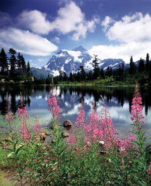
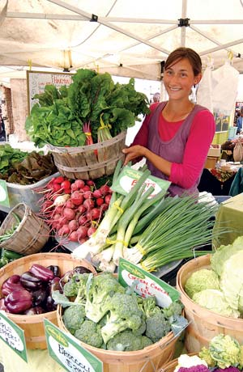

Some locals insist that snowboarding was invented and perfected on the slopes of Mount Baker, a 10,800-foot glacier-covered mountain clearly visible from the streets of Bellingham. Others have little interest in snowboarding but love to sail, kayak, watch Orca whales, see great art, go to the farmers market or see concerts at Mount Baker Theater. Bellingham, just south of the Canadian border and 90 miles north of Seattle, supplies all these possibilities.
“A lot of people move here, then figure out how they’ll make a living,” says Michelle Long, executive director of Sustainable Connections, a nonprofit organization based in Bellingham whose mission is to promote the economic benefits of choosing local, independently owned businesses.
What makes Bellingham a great place is the deliberate effort to include sustainability and quality of life as part of every community discussion. With community enrichment as the overall goal, groups such as the Whatcom Coalition for Healthy Communities identified a “dashboard of indicators” for tracking the community’s health in terms of crime rate, civic involvement and infant mortality. Recognizing the need for a new generation of farmers to provide locally grown food, Sustainable Connection’s “Food to Bank On” program has offered apprenticeships to 23 new organic farmers in the past three years.
Bellingham and all of Whatcom County have created a local culture with a bright new ethic. Sustainability has become a way of life. Even in an environmentally active state, Whatcom was the first county to offer curbside recycling. According to a Web site pooling the data of retailers of compact fluorescent light (CFL) bulbs, Bellingham ranks 11th nationally in per capita sales of CFLs. The City of Bellingham has opted to purchase 100 percent green power from renewable energy sources such as solar and wind for city government operations, and Western Washington University students agreed to raise tuition slightly to fund a campus powered entirely by renewable energy.
Do you live in Bellingham? Have you visited? Please post your comments below.
Population: 72,992
Climate: Mild weather with a long rainy season. January average temperature: 35 degrees. July average: 62 degrees.
Median House Value: $252,000
Natural Assets: Access to Bellingham Bay, San Juan Islands and Mount Baker as well as the 241-acre Whatcom Falls Park that features four waterfalls and well-maintained walking trails. During the summer, Whirlpool Falls is a popular swimming hole where locals jump off cliffs as high as 50 feet into the natural pool below.
Sustainable Initiatives: Strong municipal and county commitment to resource efficiency and stewardship. Bellingham has signed the Mayors Climate Protection Agreement, and administers the Voluntary Metering Program that promotes residential and commercial water conservation.
|
 BELLINGHAM WHATCOM COUNTY TOURISM Mount Shuksan and Picture Lake |
 JON BRUNK The Bellingham Farmers Market |
|